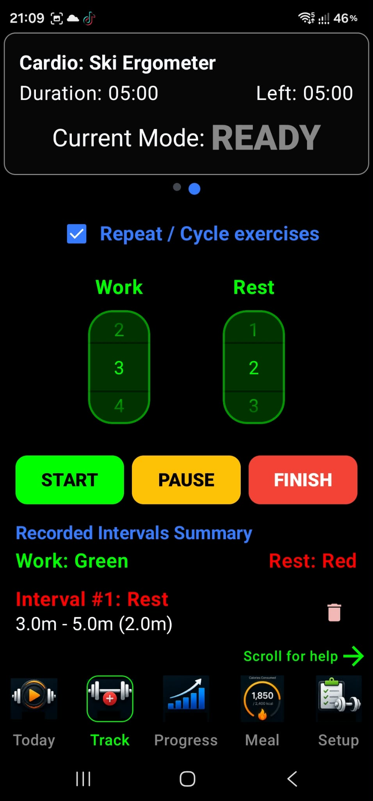
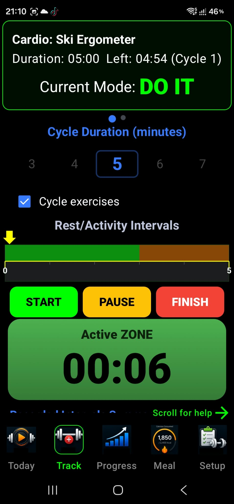

Cardio Workouts
1 Starting Cardio Workout
Set up your activity, follow your intervals, and review your cardio progress. IronSet keeps the session timer available while you work out, including when you need to switch apps.
1 Setting Up Your Workout
- Select Your Activity: Choose your cardio type, such as running, cycling, or HIIT.
- Define Intervals: For HIIT, set the active duration for high-intensity work and the rest duration for recovery.
- Start the Session: Press Start to activate the foreground service. A persistent notification appears in the status bar to show that the workout timer is running.
2 During the Workout
- The Screen Stays Awake: By default, the workout screen stays awake so you can check your time and intervals at a glance.
- Multitasking: Leave the app to change music or answer a message. The foreground service keeps tracking elapsed time in the background.
- Notifications & Cues: Receive vibration or sound cues when it is time to switch between active and rest intervals, even when the phone is in your pocket.
3 Ending and Progress Tracking
- Save Your Data: When you finish, the app calculates your total active time and total rest time.
- Lifetime Stats: Cardio minutes are added to your global profile. View how your endurance changes over time in the Statistics tab.
- Battery Efficiency: When you tap Stop or Finish, the background service shuts down to conserve battery.
Welcome to the Cardio Timer
This screen is designed to guide you through your high-intensity intervals (HIIT), runs, or cycling sessions. It acts as your personal coach, keeping track of every second so you can focus entirely on your workout.
1 Setting Your Intervals
Use the number pickers at the top of the screen:
- Work: Choose the duration, in minutes or seconds, for your high-intensity phase. This is when you go all out!
- Rest: Choose how long you need to recover before the next burst.
- Repeat / Cycle exercises: When checked, the app automatically switches between Work and Rest until you decide to stop.
2 Controlling the Workout
- START (Green): Begins your session and starts a background service. You can lock your phone or switch to your music app while IronSet keeps the timer accurate.
- PAUSE (Yellow): Temporarily stops the timer if you need a break.
- FINISH (Red): Ends the session and prepares your data to be saved to your lifetime statistics.
3 Recorded Intervals Summary
As you exercise, the app builds a live log of your intervals:
- Green labels: Represent your Active or Work intervals.
- Red labels: Represent your Rest or Recovery intervals.
- Interval details: Each entry shows its start time, end time, and total duration (for example, 2.0m).
- Correcting a mistake: Tap the Trash icon next to an interval to remove it from your session summary.
What to Expect During Your Workout
- The Screen Won't Go Dark: While you are on this screen, the phone stays awake so you can see your progress without touching the screen.
- Background Reliability: If you put the phone in your pocket, the foreground service (indicated by the status-bar icon) helps keep the timer running. You will still receive signals when it is time to switch between Work and Rest.
- Auto-Saving: When you tap Finish, the recorded intervals are processed. The app calculates your total active time and total rest time, then adds them to your global Cardio Statistics so you can track your progress over time.

Active Cardio Dashboard
This screen is your Active Cardio Dashboard. It provides real-time tracking, visual cues, and interval management for your workout, and is designed to stay active and accurate even during long sessions.
1 The Workout Header
The status panel at the top gives you an immediate overview of your current progress:
- Exercise Type: Shows the activity you are performing, such as Ski Ergometer.
- Duration & Time Left: Displays your target duration and how much time remains in the current cycle.
- Current Mode (DO IT): This is your live instruction. When it appears in green, you are in your active work phase.
2 Cycle Configuration
- Cycle Duration: Use the scrollable number picker to choose how many minutes each full cycle lasts (shown as 5 minutes in the example).
- Cycle Exercises checkbox: When checked, the app automatically restarts the timer for a new cycle when the current one finishes, allowing continuous, hands-free training.
3 The Interval Timeline
The Rest/Activity Intervals bar provides a visual map of your workout:
- Green section: Represents your high-intensity Active Zone.
- Brown section: Represents your Rest/Recovery Zone.
- Yellow arrow: Shows your position in the current cycle. As it moves across the bar, you can see how much work remains before your next rest period.
4 Controls and Live Timer
-
Action buttons:
- START: Begins the workout and activates the background service.
- PAUSE: Temporarily halts the timer.
- FINISH: Ends the session and saves your progress to your lifetime statistics.
- Active ZONE Timer: The large digits at the bottom show elapsed time for your current phase. A green background indicates you are in the Active portion of your interval.
Reliability Features
Behind the scenes, Android features help protect your tracking during long cardio workouts:
- Continuous Tracking: Even if you switch to a music app or the screen turns off, the IronSet foreground service (indicated by a notification) keeps the timer running and delivers transition signals.
- Always-On Display: The screen stays awake while this dashboard is visible, so you can monitor intervals without touching the phone during exercise.
- Automatic Data Saving: When you tap Finish, the app calculates your total active time and adds it to your cumulative cardio history.

2 Overview
How IronSet keeps workout timers and interval logic running reliably when you leave the app or turn off your screen.
Android 14 (API level 34) introduced stricter requirements for foreground services. An app must declare a service type that matches the work it performs. IronSet uses the special-use type for its workout service when cardio timers and related workout logic need to continue while the app is in the background.
1 What special use means
The specialUse type is intended for a critical, user-initiated foreground task that does not fit an available standard category. For IronSet, the service coordinates workout timers and related logic during a session.
3 Why IronSet uses special use
A cardio session may last a long time. The foreground service helps keep the workout's timer and state active if the user switches apps or the screen turns off.
4 Requirements for the service
When using the special-use foreground service type, IronSet should keep the service visible, tied to an explicit user action, and limited to the time the workout needs it.
1 User awareness
Show an ongoing foreground-service notification while the
service runs. IronSet starts foreground operation from its
workout service using startForeground().
2 User initiation
Start the service as the result of a clear user action, such as selecting Start Workout.
3 Stop when no longer needed
Stop the foreground service when the workout is finished or the user ends the session, so it does not continue running unnecessarily.
4 Explain the special-use subtype
Provide a concise subtype description in the app manifest that explains the user-facing purpose of the service. The project description is:
5 Health vs. special use
Android also provides a health foreground-service type. Choose the type that accurately describes the service's primary work and permissions; a workout timer alone does not necessarily require live health-sensor access.
1 When a health service may fit
If IronSet adds features that continuously read live heart rate or other health data, review whether the health type better matches those features and their applicable Android requirements.
IronSet uses a foreground service to support workout timers and related cardio-session behavior when the app is not on screen. Keep the declaration aligned with the app's real behavior, make the service user-initiated and visible, and stop it when the workout ends.